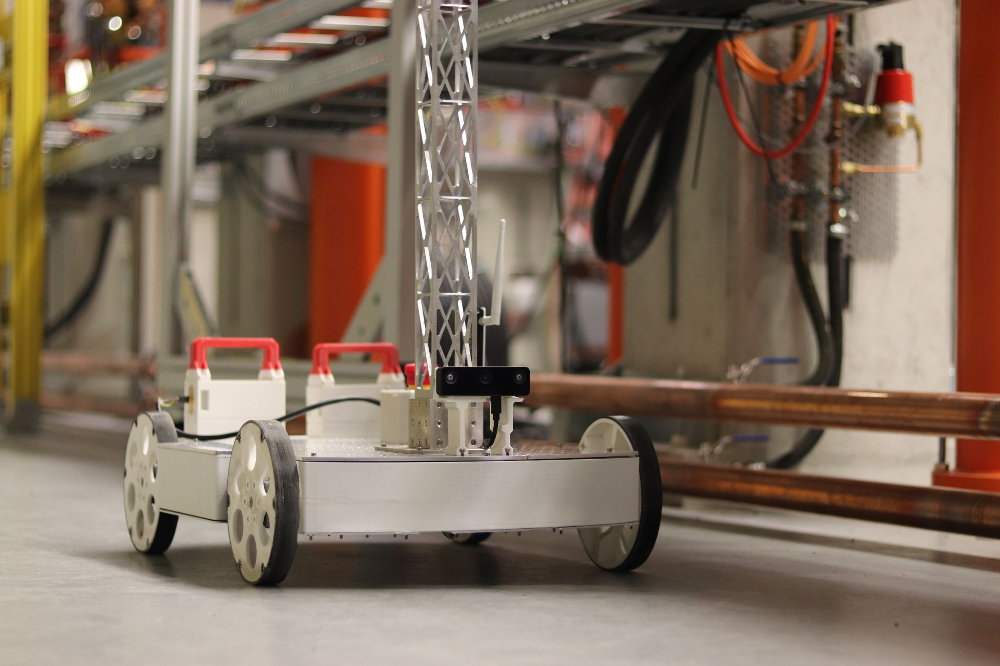
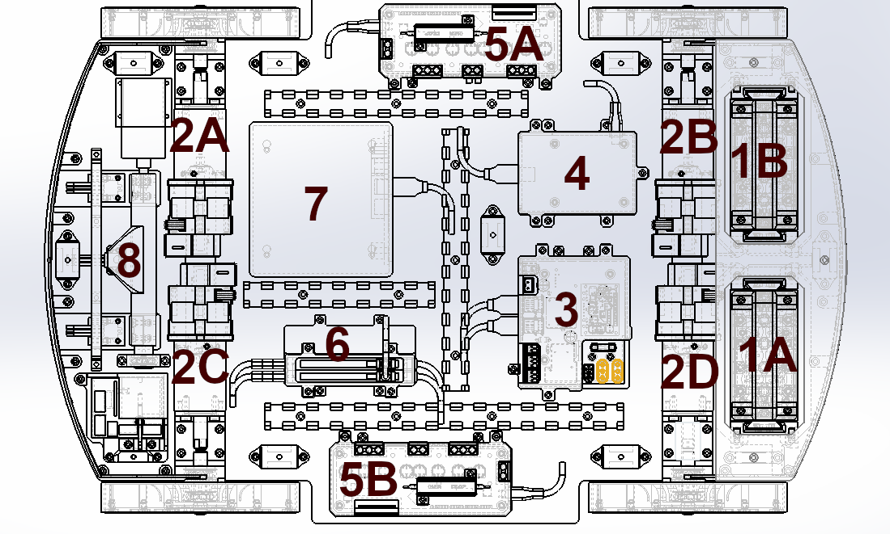
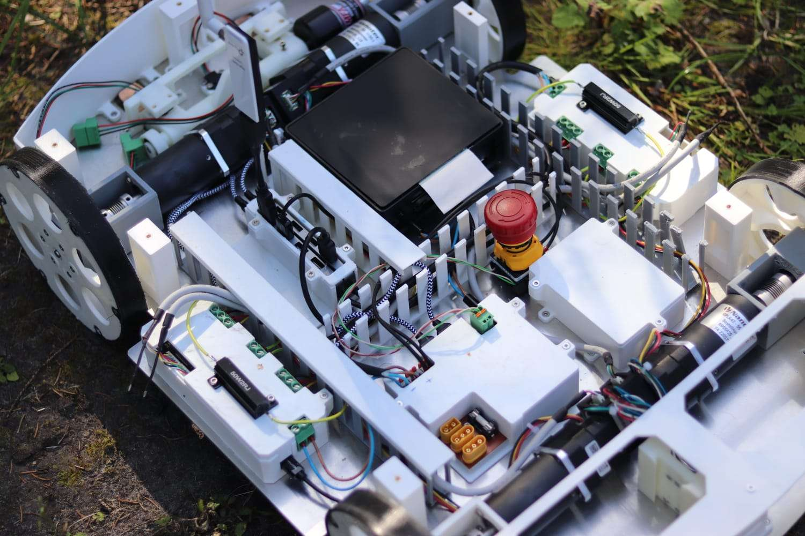

FIRO¶

FIRO (FLASH Inspection Rover, also known as Facility Inspection Rover) is a mobile robot designed to operate in environments where human presence is restricted due to hazardous radiation levels. It is a student project developed mostly during Erasmus internships at the FLASH particle accelerator at DESY (hence the name of the robot). FIRO's capabilities are primarily driven by FLASH demands and requirements.Objectives¶
- Radiation Measurements
Measuring radiation levels throughout the accelerator tunnel to detect and pinpoint anomalies, particularly sources of radiation scattering. Essentially, this generates a high-resolution map of radiation along the accelerator, as an alternative to data from a few radiation sensors at designated locations. Such capability is valuable because scattering sources negatively affect beam quality. - Real-Time Monitoring
Providing a live camera stream to enable on-demand monitoring of the accelerator's machinery. This is especially useful during the commissioning process when the correct operation of the new equipment has to be confirmed, often by visual monitoring. - Incident Response
Providing a local view in case of incidents such as gas leaks. This is important because the accelerator tunnel cannot be accessed immediately by personnel after an incident occurs. First, the accelerator has to be shut down, and conditions in the tunnel have to be confirmed in case additional safety precautions are necessary. By providing an immediate local view, the incident can be diagnosed faster, leading to quicker repairs and shorter accelerator downtime.
Additional Functionalities¶
The FIRO robot has additional capabilities that are not specific to the needs of restricted access environments, however, they are still desired at FLASH.
- Virtual Tour
Utilizing a 360-degree camera to update virtual tours of the FLASH tunnel. This functionality is used to automate a process currently performed by humans. During FLASH development, virtual tours are used to document progress and particularly to provide detailed information on the current status of FLASH through imagery. Automating this task can lead to several improvements:- Improved repeatability allowing better visual difference comparison (such differences can be automatically highlighted).
- Better spatial resolution: Virtual Tours can be updated much faster by the robot, hence if desired, the 360 photos can be taken more densely with no additional cost as long as the robot is not swamped by other tasks.
- Better temporal resolution: Virtual Tours could also be updated more often, or even on-demand, after someone applies key modifications to the accelerator or when someone needs to confirm the current status of the FLASH development.
General Specification¶
Component Overview¶
- (A, B) Battery Packs - 2 x 127Wh
- (A, B, C, D) Wheel BLDC Motors
- Power Management Module
- Placeholder for Future Use - Currently designed to hold a Raspberry Pi 3
- (A, B) BLDC Motor Drivers - ODrive v3.6
- USB Hub - 2 x 4 ports
- Onboard Computer - Jetson Nano
- Charging Module
Component Layout

Top View Photo for Reference

Mechanical Design¶
-
Dimensions:
- Width: 42.5 cm
- Length: 56.5 cm
Additional context:
- The distance between the front and back wheels is equal to the distance between the left and right wheels (wheel track = wheel base = 40cm).
- The platform fits within a circle with a diameter of 71cm, allowing it to easily turn, even when passing through a standard door frame (80cm width).
- Mobility: The rover is a 4-wheel differential robot, which means it can turn in place but cannot drive sideways.
- Wheels: Each wheel has a radius of 8.25 cm and is powered by an industrial BLDC motor. These motors provide a nominal torque of 2.5 Nm and can peak at 7.5 Nm, operating at 71 rpm nominally. The motors are operated at a higher voltage than nominal (24V), therefore the actual operating speed is higher.
- Speed: The robot is capable of reaching speeds slightly above 1m/s, however, for safety, it is limited to 1 m/s both in rover software and in wheel motor drivers' configuration.
Power System¶
- Battery Specifications:
- Nominal voltage: 36.4V (10s configuration)
- Nominal capacity: 254 Wh
- Charging: At the front of the robot, deployable probes are used for connecting to a custom-made flat charging station. Alternatively, a charger can be manually connected to the XT60 plug located in the power management module.
- Power Management Module: Located at the back of the robot, this module is responsible for distributing battery power. Besides directly powering output ports, it includes handling an emergency button, overvoltage and overcurrent protection, and voltage converters (5, 12, and 24V).
Control and Communication Systems¶
- Onboard Computer: Jetson Nano
- Software Framework: ROS Noetic
- Periphery Interfaces:
Peripherals can use USB 2, USB 3, or CAN for communication with the onboard computer. Below is outlined what interfaces are currently used by the rover's equipment:- Webcams: USB 2
- Depth camera: USB 3
- 360-degree camera: USB 3
- Motor drivers: USB 2, but in the future will use CAN
- Charging module: Not supported yet, will use CAN
- RadCon: Not supported yet, will use USB 2
- Motor Drivers: ODrive v3.6
- Remote Connectivity: Wi-Fi 2.4GHz and 5GHz
Additional context: Standard USB stick antenna is used. High-powered antennas are restricted within FLASH. However, the network coverage is supported by the facility's infrastructure. In areas with weak coverage, a dedicated team works to enhance connectivity.